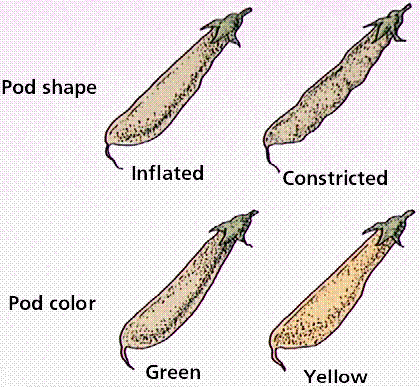
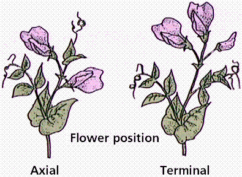
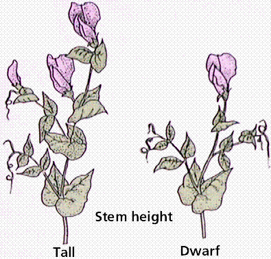
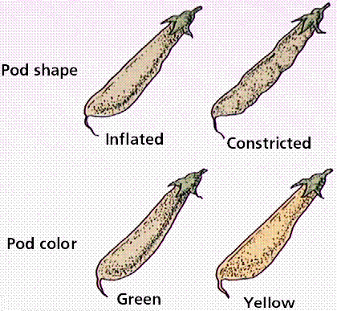
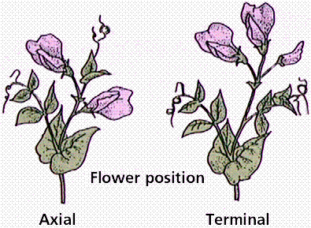
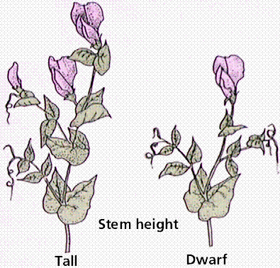
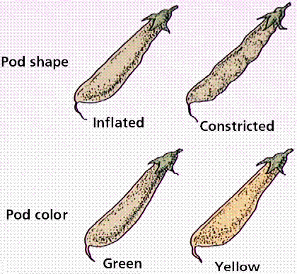
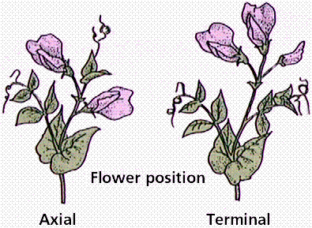
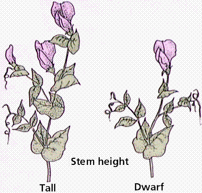
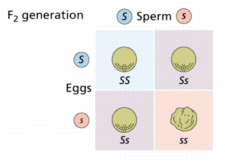

Dihybrid Crosses | Mutations | Genetic Terms | Links
For much of human history people were unaware of the scientific details of how babies were conceived and how heredity worked. Clearly they were conceived, and clearly there was some hereditary connection between parents and children, but the mechanisms were not readily apparent. The Greek philosophers had a variety of ideas: Theophrastus proposed that male flowers caused female flowers to ripen; Hippocrates speculated that "seeds" were produced by various body parts and transmitted to offspring at the time of conception, and Aristotle thought that male and female semen mixed at conception. Aeschylus, in 458 BC, proposed the male as the parent, with the female as a "nurse for the young life sown within her".
During the 1700s, Dutch microscopist Anton van Leeuwenhoek (1632-1723) discovered "animalcules" in the sperm of humans and other animals. Some scientists speculated they saw a "little man" (homunculus) inside each sperm. These scientists formed a school of thought known as the "spermists". They contended the only contributions of the female to the next generation were the womb in which the homunculus grew, and prenatal influences of the womb. An opposing school of thought, the ovists, believed that the future human was in the egg, and that sperm merely stimulated the growth of the egg. Ovists thought women carried eggs containing boy and girl children, and that the gender of the offspring was determined well before conception.
Pangenesis was an idea that males and females formed "pangenes" in every organ. These pangenes subsequently moved through their blood to the genitals and then to the children. The concept originated with the ancient Greeks and influenced biology until little over 100 years ago. The terms "blood relative", "full-blooded", and "royal blood" are relicts of pangenesis. Francis Galton, Charles Darwin's cousin, experimentally tested and disproved pangenesis during the 1870s.
Blending theories of inheritance supplanted the spermists and ovists during the 19th century. The mixture of sperm and egg resulted in progeny that were a "blend" of two parents' characteristics. Sex cells are known collectively as gametes (gamos, Greek, meaning marriage). According to the blenders, when a black furred animal mates with white furred animal, you would expect all resulting progeny would be gray (a color intermediate between black and white). This is often not the case. Blending theories ignore characteristics skipping a generation. Charles Darwin had to deal with the implications of blending in his theory of evolution. He was forced to recognize blending as not important (or at least not the major principle), and suggest that science of the mid-1800s had not yet got the correct answer. That answer came from a contemporary, Gregor Mendel, although Darwin apparently never knew of Mendel's work.
An Austrian monk, Gregor Mendel, developed the fundamental principles that would become the modern science of genetics. Mendel demonstrated that heritable properties are parceled out in discrete units, independently inherited. These eventually were termed genes.
Gregor Mendel, the Austrian monk who figured out the rules of hereity. The above photo is from http://www.open.cz/project/tourist/person/photo.htm.
Mendel reasoned an organism for genetic experiments should have:
Mendel's experimental organism was a common garden pea (Pisum sativum), which has a flower that lends itself to self-pollination. The male parts of the flower are termed the anthers. They produce pollen, which contains the male gametes (sperm). The female parts of the flower are the stigma, style, and ovary. The egg (female gamete) is produced in the ovary. The process of pollination (the transfer of pollen from anther to stigma) occurs prior to the opening of the pea flower. The pollen grain grows a pollen tube which allows the sperm to travel through the stigma and style, eventually reaching the ovary. The ripened ovary wall becomes the fruit (in this case the pea pod). Most flowers allow cross-pollination, which can be difficult to deal with in genetic studies if the male parent plant is not known. Since pea plants are self-pollinators, the genetics of the parent can be more easily understood. Peas are also self-compatible, allowing self-fertilized embryos to develop as readily as out-fertilized embryos. Mendel tested all 34 varieties of peas available to him through seed dealers. The garden peas were planted and studied for eight years. Each character studied had two distinct forms, such as tall or short plant height, or smooth or wrinkled seeds. Mendel's experiments used some 28,000 pea plants.
Some of Mendel's traits as expressed in garden peas. Images from Purves et al., Life: The Science of Biology, 4th Edition, by Sinauer Associates (www.sinauer.com) and WH Freeman (www.whfreeman.com), used with permission.
Mendel's contribution was unique because of his methodical approach to a definite problem, use of clear-cut variables and application of mathematics (statistics) to the problem. Gregor Using pea plants and statistical methods, Mendel was able to demonstrate that traits were passed from each parent to their offspring through the inheritance of genes.
Mendel's work showed:
Mendel studied the inheritance of seed shape first. A cross involving only one trait is referred to as a monohybrid cross. Mendel crossed pure-breeding (also referred to as true-breeding) smooth-seeded plants with a variety that had always produced wrinkled seeds (60 fertilizations on 15 plants). All resulting seeds were smooth. The following year, Mendel planted these seeds and allowed them to self-fertilize. He recovered 7324 seeds: 5474 smooth and 1850 wrinkled. To help with record keeping, generations were labeled and numbered. The parental generation is denoted as the P1 generation. The offspring of the P1 generation are the F1 generation (first filial). The self-fertilizing F1 generation produced the F2 generation (second filial).
Inheritance of two alleles, S and s, in peas. Image from Purves et al., Life: The Science of Biology, 4th Edition, by Sinauer Associates (www.sinauer.com) and WH Freeman (www.whfreeman.com), used with permission.

Punnett square explaining the behavior of the S and s alleles. Image from Purves et al., Life: The Science of Biology, 4th Edition, by Sinauer Associates (www.sinauer.com) and WH Freeman (www.whfreeman.com), used with permission.
P1: smooth X wrinkled
F1 : all smooth
F2 : 5474 smooth and 1850 wrinkled
Meiosis, a process unknown in Mendel's day, explains how the traits are inherited.
The inheritance of the S and s alleles explained in light of meiosis. Image from Purves et al., Life: The Science of Biology, 4th Edition, by Sinauer Associates (www.sinauer.com) and WH Freeman (www.whfreeman.com), used with permission.
Mendel studied seven traits which appeared in two discrete forms, rather than continuous characters which are often difficult to distinguish. When "true-breeding" tall plants were crossed with "true-breeding" short plants, all of the offspring were tall plants. The parents in the cross were the P1 generation, and the offspring represented the F1 generation. The trait referred to as tall was considered dominant, while short was recessive. Dominant traits were defined by Mendel as those which appeared in the F1 generation in crosses between true-breeding strains. Recessives were those which "skipped" a generation, being expressed only when the dominant trait is absent. Mendel's plants exhibited complete dominance, in which the phenotypic expression of alleles was either dominant or recessive, not "in between".
When members of the F1 generation were crossed, Mendel recovered mostly tall offspring, with some short ones also occurring. Upon statistically analyzing the F2 generation, Mendel determined the ratio of tall to short plants was approximately 3:1. Short plants have skipped the F1 generation, and show up in the F2 and succeeding generations. Mendel concluded that the traits under study were governed by discrete (separable) factors. The factors were inherited in pairs, with each generation having a pair of trait factors. We now refer to these trait factors as alleles. Having traits inherited in pairs allows for the observed phenomena of traits "skipping" generations.
Summary of Mendel's Results:
Mendel's Conclusions:
Mendel reasoned that factors must segregate from each other during gamete formation (remember, meiosis was not yet known!) to retain the number of traits at 2. The Principle of Segregation proposes the separation of paired factors during gamete formation, with each gamete receiving one or the other factor, usually not both. Organisms carry two alleles for every trait. These traits separate during the formation of gametes.
A hypertext version (in German or English, annotated also available) of Mendel's 1865 paper is available by clicking here.
When Mendel considered two traits per cross (dihybrid, as opposed to single-trait-crosses, monohybrid), The resulting (F2) generation did not have 3:1 dominant:recessive phenotype ratios. The two traits, if considered to inherit independently, fit into the principle of segregation. Instead of 4 possible genotypes from a monohybrid cross, dihybrid crosses have as many as 16 possible genotypes.
Mendel realized the need to conduct his experiments on more complex situations. He performed experiments tracking two seed traits: shape and color. A cross concerning two traits is known as a dihybrid cross.
Crosses With Two Traits
Smooth seeds (S) are dominant over wrinkled (s) seeds.
Yellow seed color (Y) is dominant over green (g).
Inheritance of two traits simultaneously, a dihybrid cross. The above graphic is from the Genetics pages at McGill University (http://www.mcgill.ca/nrs/dihyb2.gif).
Again, meiosis helps us understand the behavior of alleles.
The inheritance of two traits on different chromosomes can be explained by meiosis. Image from Purves et al., Life: The Science of Biology, 4th Edition, by Sinauer Associates (www.sinauer.com) and WH Freeman (www.whfreeman.com), used with permission.
Methods, Results, and Conclusions
Mendel started with true-breeding plants that had smooth, yellow seeds and crossed them with true-breeding plants having green, wrinkled seeds. All seeds in the F1 had smooth yellow seeds. The F2 plants self-fertilized, and produced four phenotypes:
315 smooth yellow
108 smooth green
101 wrinkled yellow
32 wrinkled green
Mendel analyzed each trait for separate inheritance as if the other trait were not present.The 3:1 ratio was seen separately and was in accordance with the Principle of Segregation. The segregation of S and s alleles must have happened independently of the segregation of Y and y alleles. The chance of any gamete having a Y is 1/2; the chance of any one gamete having a S is 1/2.The chance of a gamete having both Y and S is the product of their individual chances (or 1/2 X 1/2 = 1/4). The chance of two gametes forming any given genotype is 1/4 X 1/4 (remember, the product of their individual chances). Thus, the Punnett Square has 16 boxes. Since there are more possible combinations to produce a smooth yellow phenotype (SSYY, SsYy, SsYY, and SSYy), that phenotype is more common in the F2.
From the results of the second experiment, Mendel formulated the Principle of Independent Assortment -- that when gametes are formed, alleles assort independently. If traits assort independent of each other during gamete formation, the results of the dihybrid cross can make sense. Since Mendel's time, scientists have discovered chromosomes and DNA. We now interpret the Principle of Independent Assortment as alleles of genes on different chromosomes are inherited independently during the formation of gametes. This was not known to Mendel.
Punnett squares deal only with probability of a genotype showing up in the next generation. Usually if enough offspring are produced, Mendelian ratios will also be produced.
Step 1 - definition of alleles and determination of dominance.
Step 2 - determination of alleles present in all different types of gametes.
Step 3 - construction of the square.
Step 4 - recombination of alleles into each small square.
Step 5 - Determination of Genotype and Phenotype ratios in the next generation.
Step 6 - Labeling of generations, for example P1, F1, etc.
While answering genetics problems, there are certain forms and protocols that will make unintelligible problems easier to do. The term "true-breeding strain" is a code word for homozygous. Dominant alleles are those that show up in the next generation in crosses between two different "true-breeding strains". The key to any genetics problem is the recessive phenotype (more properly the phenotype that represents the recessive genotype). It is that organism whose genotype can be determined by examination of the phenotype. Usually homozygous dominant and heterozygous individuals have identical phenotypes (although their genotypes are different). This becomes even more important in dihybrid crosses.
Hugo de Vries, one of three turn-of-the-century scientists who rediscovered the work of Mendel, recognized that occasional abrupt, sudden changes occurred in the patterns of inheritance in the primrose plant. These sudden changes he termed mutations. De Vries proposed that new alleles arose by mutations. Charles Darwin, in his Origin of Species, was unable to describe how heritable changes were passed on to subsequent generations, or how new adaptations arose. Mutations provided answers to problems of the appearance of novel adaptations. The patterns of Mendelian inheritance explained the perseverance of rare traits in organisms, all of which increased variation, as you recall that was a major facet of Darwin's theory.
Mendel's work was published in 1866 but not recognized until the early 1900s when three scientists independently verified his principles, more than twenty years after his death. Ignored by the scientific community during his lifetime, Mendel's work is now a topic enjoyed by generations of biology students (;))
Definitions of terms. While we are discussing Mendel, we need to understand the context of his times as well as how his work fits into the modern science of genetics.
Gene - a unit of inheritance that usually is directly responsible for one trait or character.
Allele - an alternate form of a gene. Usually there are two alleles for every gene, sometimes as many a three or four.
Homozygous - when the two alleles are the same.
Heterozygous - when the two alleles are different, in such cases the dominant allele is expressed.
Dominant - a term applied to the trait (allele) that is expressed irregardless of the second allele.
Recessive - a term applied to a trait that is only expressed when the second allele is the same (e.g. short plants are homozygous for the recessive allele).
Phenotype - the physical expression of the allelic composition for the trait under study.
Genotype - the allelic composition of an organism.
Punnett squares - probability diagram illustrating the possible offspring of a mating.
Back to Table of Contents | Go to GENE INTERACTIONS
Email: mj.farabee@emcmail.maricopa.edu
Last modified:
The URL of this page is:
{kind=link}